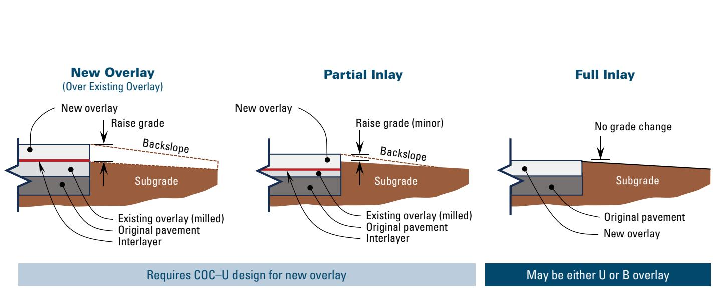
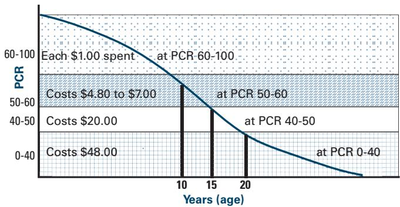
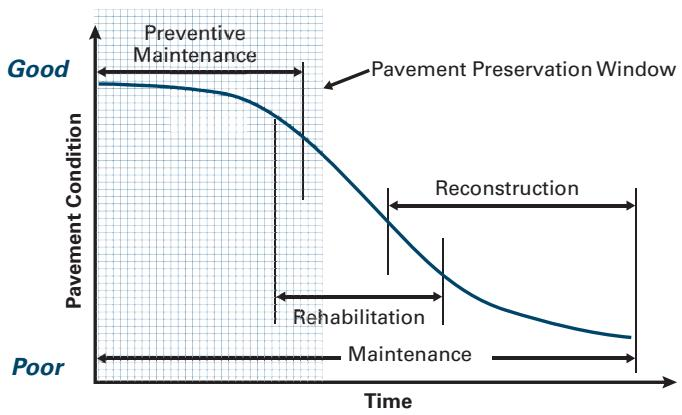

Life-Cycle Cost Analysis
Life‑Cycle Cost Analysis (LCCA) is a decision‑support process used to evaluate the total economic worth of competing pavement alternatives by accounting for all monetary outlays—from initial construction through discounted future maintenance, rehabilitation, replacement and user‑costs—over a defined analysis period[2][1]. By converting every cost stream to present‑value terms using an appropriate discount rate, LCCA yields a single dollar figure that enables agencies to compare options on an equivalent basis and select the treatment that meets performance requirements at the lowest life‑cycle expense[2][3]. The method is applied whenever alternatives such as new construction, preservation, overlay repair or full reconstruction are being considered, provided the alternatives have comparable structures, service lives and design loads, and it is typically performed early in the project using tools like FHWA RealCost software[1][4].
CP Tech Center Guides reports covering “Life-Cycle Cost Analysis” also include the following subtopics: Life-Cycle Cost Analysis in Sustainable Pavement Design.
Life-Cycle Cost Analysis incorporates Life-Cycle Cost Analysis in Sustainable Pavement Design as a specialized evaluation that extends the assessment from raw-material extraction through end-of-life phases to balance economic, environmental, and social impacts. [1][4][9]
Sources (10)
Sub-concepts (1)
Purpose and decision context
Life‑Cycle Cost Analysis (LCCA) is used to decide whether a particular construction practice, material choice, or pavement design should be adopted. It is employed as a decision‑support tool to choose among competing pavement alternatives by comparing the total economic worth of each option over an analysis period. The method can be applied to evaluate whether an existing overlay should be repaired and kept in service or removed and replaced entirely, combining repair costs, projected lifespan, replacement cost, future maintenance, traffic disruption impacts, and environmental effects for an objective comparison. LCCA also supports the selection of the optimal pavement treatment strategy—such as low‑cost preservation, rehabilitation, or reconstruction—by providing a common present‑worth basis for all associated expenditures. [1][3][4][5][6][7][8]
The following figure illustrates a decision tree for determining the optimal end-of-life strategy for replacing a concrete overlay.

Cross-sections of three concrete overlay replacement strategies: New Overlay, Partial Inlay, and Full Inlay. [5]The figure displays cross-sectional diagrams comparing a new overlay placed over milled existing pavement with partial and full inlays that remove the old surface to match the original grade.
[1] — Ch. 2 (p. 41), Ch. 10 (p. 323); [3] — Ch. 2 (p. 24); [4] — Ch. 6 (p. 96); [5] — Economic Feasibility Analysis … (p. 21); [6] — Ch. 12 (pp. 272–274); [7] — App. B (pp. 121–124); [8] — Ch. 11 (pp. 220–222)
Life‑Cycle Cost Analysis addresses the fundamental problem of selecting pavement treatments based solely on initial construction outlays by providing a comprehensive, whole‑life accounting framework. It is defined as “a process for evaluating the total economic worth of a usable project segment by analyzing initial costs and discounted future costs, such as maintenance, user costs, reconstruction, rehabilitation, restoring, and resurfacing costs over the life of the project segment.” By converting all expenditures to present‑value terms—“accounts for the time value of money”—the analysis yields a single dollar figure: “An LCCA is performed in units of dollars and is equal to the construction cost plus the present value of future maintenance, repair, rehabilitation, and replacement costs over the life of the pavement.” This unified cost metric enables agencies to compare alternatives and choose the option that meets performance requirements while minimizing total economic cost throughout the service life. [1][3][4][5][6][7][8]
[1] — Ch. 2 (p. 41), Ch. 10 (p. 323); [3] — Ch. 2 (p. 24); [4] — Ch. 6 (p. 96); [5] — Economic Feasibility Analysis … (p. 21); [6] — Ch. 12 (pp. 272–274); [7] — App. B (pp. 121–124); [8] — Ch. 11 (pp. 220–222)
Scope and applicability
Life‑Cycle Cost Analysis is appropriate whenever an agency must compare alternatives that involve new construction, major rehabilitation, or reconstruction—“each state highway agency is required to do some type of LCCA when using federal funds to support large rehabilitation or reconstruction projects”—or overlay repair versus replacement—“A life-cycle cost analysis may be a useful tool to combine all of these factors for an objective comparison of continued overlay repair versus replacement over the expected lifespan of the options.” It also applies to preservation treatments and thin overlays—“where LCCA results do become important is when the concrete pavement preservation treatments and strategies are being considered along with more extensive rehabilitation techniques (i.e., overlays) or reconstruction”—and to selecting between CRCP and JPCP overlay types—“Life-cycle cost analysis (LCCA) can be a helpful tool in deciding whether to pursue a concrete overlay strategy and in choosing the appropriate overlay type for a given project.” The analysis is warranted when the pavement has reached an end‑of‑life condition or when multiple viable treatment alternatives exist—“The economic analysis for determining end of life is analogous to the determination used by insurance companies to decide whether to repair or “total” a damaged automobile.” It must compare “equivalent pavement structures…the same service life and design load.” LCCA is employed during early decision‑making phases such as strategy‑selection, treatment‑selection, feasibility after structural capacity and roughness assessments, and the planning/design stage—“An LCCA provides an objective method of comparing the costs associated with different treatments.” The analysis period must be long enough to capture future maintenance and at least one rehabilitation event—“The FHWA recommends an analysis period of at least 35 years for all pavement projects, including new or rehabilitation (Walls and Smith 1998).” and “Analysis periods typically range around 40 years,” ensuring that lower maintenance requirements can outweigh higher initial costs when the horizon exceeds the design life and includes a rehabilitation cycle—“lower maintenance requirements over its service life generally make it a better choice when the agency’s analysis period is greater than the design life of the roadway and includes at least one rehabilitation cycle.” [4][5][6][7][8]
The following figure illustrates how preventive maintenance and rehabilitation interventions typically influence concrete pavement condition over time.
 Illustration of typical impacts of preventive maintenance and rehabilitation on concrete pavement condition (Smith, Hoerner, and Peshkin 2008) [4]
Illustration of typical impacts of preventive maintenance and rehabilitation on concrete pavement condition (Smith, Hoerner, and Peshkin 2008) [4]
The figure displays a graph plotting Pavement Condition against Time, showing a solid blue curve that represents the natural deterioration of pavement from Good to Poor. Dotted lines illustrate how specific interventions alter this trajectory: Preventive Maintenance is shown as small, periodic upward steps taken while the pavement is still in generally good condition, whereas Rehabilitation is depicted as a large vertical jump applied after significant deterioration has occurred. This visualizes the decision-making process central to Life-Cycle Cost Analysis (LCCA), where agencies must determine the right time and strategy for maintenance or rehabilitation to ensure cost-effectiveness while reducing life-cycle environmental impact.
[4] — Ch. 6 (p. 96); [5] — Economic Feasibility Analysis … (p. 21); [6] — Ch. 12 (pp. 272–274); [7] — App. B (p. 121); [8] — Ch. 11 (pp. 220–222)
When the analysis must capture benefits that cannot be expressed in monetary terms—such as environmental or societal advantages of recycled concrete—LCCA is not appropriate because it only handles costs that can be accurately quantified financially. The guides note that “LCCA is not generally used to quantify or assess the potential environmental or societal benefits associated with the use of recycled concrete,” and that this limitation “has resulted in an increased emphasis on use of other assessment tools (described in subsequent sections), in addition to LCCA.” Likewise, LCCA loses relevance when the alternatives are not truly comparable; it is relevant only for equivalent pavement structures. As stated, “An LCCA is relevant only if equivalent pavement structures are being compared (for example, the same service life and design load),” and “the design life of the pavement alternatives should be stated and applied consistently during an LCCA.” The method also becomes unnecessary when a concrete‑pavement preservation segment has a single clear treatment that addresses its specific deficiency. One source explains that “Because the various individual concrete pavement preservation treatments for the most part address different pavement deficiencies, cost‑effectiveness analysis techniques are not typically needed to help select appropriate treatment strategies.” A similar observation appears in another guide: “Because the concrete pavement preservation treatments address different pavement deficiencies, lifecycle costing techniques are not typically needed to help select appropriate strategies.” In addition, LCCA is unsuitable when user‑cost components—traffic delays, vehicle operating costs, crash costs, freight damage—cannot be reliably quantified or are not borne by the agency. The guides point out that “The inclusion of user costs as part of a LCC analysis is a controversial issue,” and that “the actual costs are difficult to quantify, particularly or road roughness,” while “user costs are not borne by the agency, and agencies have difficult giving them the same weight in a decision process as thei own actual costs.” When deterministic inputs dominate an analysis despite high uncertainty—e.g., service lives or unit costs differing markedly from assumptions—a probabilistic or multi‑criteria evaluation is preferred. As noted, “recognition of the shortcomings of a deterministic approach, a probabilistic approach may be conducted,” and “The lowest life-cycle cost option may not be implemented when other considerations such as risk, available budgets, and political and environmental concerns are taken into account.” In these situations, alternative decision‑making tools—benefit‑cost ratio, dollars‑per‑lane‑mile‑year optimization, remaining service interval planning, or life‑cycle planning—are recommended. [3][4][6][8]
[3] — Ch. 2 (p. 24); [4] — Ch. 6 (p. 96); [6] — Ch. 12 (pp. 272–274); [8] — Ch. 11 (pp. 220–222)
Information needs
An LCCA begins by defining an explicit analysis period and applying a discount rate to bring all future outlays to present value. The input package must contain the full monetary cost profile of the pavement project—from initial engineering, contract administration and construction expenditures through discounted future costs for routine maintenance, repairs, rehabilitation, reconstruction, resurfacing, and user‑cost components over the life of the segment. Quantifiable savings such as lower material prices, reduced haul distances, or avoided landfill fees are included when they can be expressed in dollars; broader environmental or societal impacts that cannot be monetized are excluded.
Condition data are required to establish the pavement’s starting state and to predict performance. Structural capacity and roughness assessments (including overall condition indicators, distress parameters, and friction measurements) provide the baseline for estimating the expected service life of an overlay or repair treatment and for building deterioration curves tied to traffic loading.
Traffic information must capture both the operating environment that drives deterioration and the user‑cost effects of construction. Vehicle‑operation costs under normal and work‑zone conditions, delay costs, crash risk, freight damage, and the impact of construction activities on traffic flow and safety are quantified for each alternative. [3][4][5][6][7][8]
The following figure illustrates the traffic delays resulting from such construction activities.
 Traffic delays caused by construction (photo courtesy of Jim Cable, FHWA) [4]
Traffic delays caused by construction (photo courtesy of Jim Cable, FHWA) [4]
The image displays a line of vehicles stopped on a rural highway while roadwork is conducted in the adjacent lane.
[3] — Ch. 2 (p. 24); [4] — Ch. 6 (p. 96); [5] — Economic Feasibility Analysis … (p. 21); [6] — Ch. 12 (pp. 272–274); [7] — App. B (pp. 121–124); [8] — Ch. 11 (pp. 220–222)
Alternatives
The feasible alternatives that should be compared in a life‑cycle cost analysis span the full spectrum of preservation, rehabilitation, and new construction. The guides note that analysts typically evaluate “different pavement project options—most commonly a conventional concrete design versus designs that incorporate recycled concrete materials.” They also stress comparing “alternative pavement designs or material types that deliver the same service level and design life, such as a low‑first‑cost asphalt structure versus a higher‑initial‑cost but longer‑lasting concrete structure.” For aging overlays, the options are “continued repair of the existing overlay using appropriate techniques and full replacement of the overlay (or other end‑of‑life strategies such as reconstruction).” Preservation‑focused alternatives include “preservation treatments such as partial‑depth repair, full‑depth repair, diamond grinding, and joint resealing; an overlay option like a thin concrete overlay; full reconstruction of the slab; and optionally a ‘do nothing’ alternative.” When evaluating concrete overlays specifically, analysts compare “an unbonded CRCP overlay versus an unbonded conventional jointed plain concrete (JPCP) overlay applied to the existing concrete slab.” Finally, the broader set of alternatives comprises “low‑cost preservation and routine maintenance treatments,” “more extensive rehabilitation alternatives such as concrete pavement overlays, partial or full reconstruction,” and “new‑construction alternatives.” All these options are modeled over a common analysis period with discounted cost streams to identify the alternative that yields the lowest life‑cycle cost while meeting performance requirements. [3][4][5][6][7][8]
The following figure illustrates how to determine an appropriate concrete overlay solution based on existing pavement conditions and the necessary preliminary repairs.
 Decision flowchart for selecting concrete overlay treatments based on existing pavement condition. [6]
Decision flowchart for selecting concrete overlay treatments based on existing pavement condition. [6]
The figure displays a decision matrix that categorizes pavement into Good, Fair, Poor, and Deteriorated conditions to determine the appropriate repair strategy. It guides engineers through preliminary steps such as spot repairs or milling to decide between a bonded overlay, an unbonded overlay, or full reconstruction.
[3] — Ch. 2 (p. 24); [4] — Ch. 6 (p. 96); [5] — Economic Feasibility Analysis … (p. 21); [6] — Ch. 12 (pp. 272–274); [7] — App. B (pp. 121–124); [8] — Ch. 11 (pp. 220–222)
Under a life‑cycle cost analysis the repair option requires estimating the full repair cost—including the necessary materials, labor, equipment and overhead—while judging its projected lifespan based on material quality and technique effectiveness; it generally involves less extensive work up front but carries the risk that frequent future maintenance could make it more costly over time. The replacement (or end‑of‑life) option requires a separate cost estimate for a new overlay or reconstruction, which entails substantially larger material quantities and longer upfront construction, leading to extended road closures and greater traffic disruption; although its initial outlay is higher, the risk of recurring maintenance is lower because the new structure is expected to last longer. [5]
[5] — Economic Feasibility Analysis … (p. 21)
Decision criteria
The guides concur that cost is the dominant control for life‑cycle cost analysis decisions. They state that “The primary driver for a life‑cycle cost analysis is the economic impact of the project—both the upfront construction expense and the projected long‑term maintenance outlays,” and that “the decision for a pavement project using life‑cycle cost analysis should be driven by economic factors—specifically the total monetary costs over the project’s lifespan.” Cost expressed as present value is described as “cost expressed as the present value of all expenditures is the controlling criterion for the analysis.” Durability or service life appears as a supporting factor: decisions are “anchored on cost, with durability (i.e., selecting a concrete pavement that lasts the design life with minimal upkeep) serving as a supporting factor,” and “The decision in a Life‑Cycle Cost Analysis should be driven primarily by cost considerations—specifically the total life‑cycle expense …—and by durability.” Some guides broaden the scope to include safety, environmental sustainability, and user impacts, noting that “The decision should be governed chiefly by cost (both repair and replacement expenses), the projected lifespan or durability of the overlay, safety considerations reflected in traffic disruption impacts, and environmental sustainability factors.” However, they qualify these as secondary: “other criteria like schedule or public impact are secondary,” and “cost is the primary controlling criterion, while other considerations like safety or environmental benefits must be addressed by separate tools.” One source adds that while cost dominates, “the lowest‑cost option may be set aside if other considerations such as risk exposure, available budget, or political and environmental concerns are deemed more important.” [1][3][4][5][6][7][8]
[1] — Ch. 2 (p. 41); [3] — Ch. 2 (p. 24); [4] — Ch. 6 (p. 96); [5] — Economic Feasibility Analysis … (p. 21); [6] — Ch. 12 (pp. 272–274); [7] — App. B (pp. 121–124); [8] — Ch. 11 (pp. 220–222)
Competing criteria in a life‑cycle cost analysis are weighted by first converting all costs—initial construction, maintenance, rehabilitation and salvage—to a common present‑worth basis using an appropriate discount rate. The guides note that “Initial construction costs are often the factor given the greatest consideration in the treatment selection procss,” yet “expected future costs that occur at different times over the life of the treatment must also be considered, but in order to do so they must first be converted to a common basis for comparison purposes.” Agencies should apply the current real discount rate (“Agencies should consider applying the current real discount rate currently reported in Appendix C of OMB Circular A‑94 (OMB 2020) as opposed to historical discount rates”), because it strongly influences the present value of future preservation costs.
Benefits are quantified over the analysis period and combined with costs through a benefit‑cost ratio (BCR). As stated, “The BCR analysis method combines the results of individual evaluations of treatment strategy benefits (B) and treatment strategy costs (C) to generate a BCR,” and “the treatment strategy with the highest ratio is deemed the most cost-effective.” This BCR serves as the primary weighting mechanism for balancing benefit versus cost.
Beyond the BCR, the relative importance of criteria shifts with the analysis horizon and structural design. The outcome “depends on the structural design of a particular roadway section and the analysis period selected,” so that “lower maintenance requirements over its service life generally make it a better choice when the agency’s analysis period is greater than the design life of the roadway and includes at least one rehabilitation cycle, despite the higher initial costs.” Conversely, for short horizons “initial construction cost becomes more dominant.”
Traffic intensity also influences weighting. The manuals advise that “Changes in construction practices that enhance the sustainability of the project … often incur increased costs, which must be considered and weighed against expected benefits over the life cycle of the pavement to determine their effective impacts,” and that “For this reason, it is advantageous for heavily trafficked pavements to construct long‑lasting concrete pavements that require minimal maintenance or rehabilitation over their design life.” Thus durability and user‑delay cost reductions receive greater weight on high‑traffic routes, even if they raise upfront expense.
Material price variations adjust break‑even points. For example, “With the same slab thickness for both the JPCP and CRCP overlay designs, CRCP overlays begin to have lower life‑cycle costs between 25 and 30 years for discount rates around 3% or less,” and “When the price of steel per ton is $200 (0% in Figure B.6), a CRCP overlay is the preferred option for analysis periods greater than 25 years,” with higher steel prices pushing the advantage to longer periods (“greater than 32 and 45 years” for 25 % and 50 % increases).
In summary, weighting proceeds from (1) establishing a common present‑worth cost base using the current real discount rate, (2) calculating a benefit‑cost ratio to rank alternatives, and (3) adjusting the relative emphasis on initial cost, durability, maintenance savings, traffic impacts, and material prices according to the analysis period, structural design, and traffic level. Options that raise upfront costs must “demonstrate sufficient long‑term economic advantage; otherwise they are deemed unacceptable despite environmental or societal gains.” [1][6][7][8]
[1] — Ch. 2 (p. 41); [6] — Ch. 12 (pp. 272–274); [7] — App. B (pp. 121–124); [8] — Ch. 11 (p. 220)
Analysis methods and tools
Across the guides, Life‑Cycle Cost Analysis is presented as the core decision‑support framework for pavement projects, using FHWA RealCost software to calculate discounted cash flows and net present value of agency and user costs over a selected analysis period. The approach begins with a comprehensive accounting of all monetary items—construction, maintenance, rehabilitation, resurfacing, and user impacts—and then applies discounting to bring future expenditures to a common base date. As defined, “Life‑Cycle Cost Analysis … a process for evaluating the total economic worth of a usable project segment by analyzing initial costs and discounted future costs, such as maintenance, user costs, reconstruction, rehabilitation, restoring, and resurfacing costs over the life of the project segment.” Evaluation tools include deterministic modeling (fixed inputs) and probabilistic modeling that captures uncertainty; “In recognition of the shortcomings of a deterministic approach, a probabilistic approach may be conducted that allows an agency to incorporate risk and uncertainty (Walls and Smith 1998).” Sensitivity testing is standard practice: “a sensitivity analysis should be conducted using a range of discount rates to determine how sensitive the outcome is to the choice of this value.” In addition to pure cost accounting, many guides employ a benefit‑cost ratio framework that links discounted costs with performance benefits derived from condition‑based curves; “The BCR analysis method considers the performance benefits of one or more treatment strategies and the associated costs of applying these treatment strategies.” Together, these tools enable analysts to compare alternative preservation or overlay strategies and select the option with the lowest life‑cycle cost while accounting for risk and benefit considerations. [3][4][6][7][8]
The following figure illustrates how treatment costs vary across different pavement condition ratings.

Comparison of treatment costs at different pavement condition ratings (PCRs) [4]The figure plots a downward-sloping curve representing the relationship between pavement age and condition rating, overlaid with horizontal bands that categorize cost multipliers based on specific PCR ranges.
[3] — Ch. 2 (p. 24); [4] — Ch. 6 (p. 96); [6] — Ch. 12 (pp. 272–274); [7] — App. B (p. 123); [8] — Ch. 11 (p. 222)
Life‑cycle cost analysis rests on a set of core assumptions that shape the present‑worth or uniform annual cost results. The guides agree that the analysis assumes “all relevant expenses—initial construction, discounted future maintenance, user, reconstruction and resurfacing costs—can be expressed in monetary terms” and that “a suitable discount rate can be applied to project them over the analysis period.” A common discount rate is typically assumed (often 4 percent) but may vary with funding uncertainty, and inflation assumptions are used to convert all costs to a common date. The analysis also assumes that the compared pavements have equivalent structures, service lives (often about 40 years), design loads, and correctly identified agency and user cost categories.
Additional structural and temporal assumptions include “a common analysis period for all alternatives,” the inclusion of at least one rehabilitation cycle when the period exceeds the roadway’s design life, and that “the structural design of the overlay combined with the length of the analysis period” drives cost outcomes. Assumptions about maintenance are made, such as expected future maintenance frequency and associated costs, and in some cases lower upkeep requirements for specific designs (e.g., CRCP). Cost inputs are often based on regional data, with an implicit assumption that “preservation schedules derived from northern Illinois climate and material experience” apply elsewhere, and cost equivalence for shoulders and traffic‑maintenance is sometimes assumed.
Salvage value is treated as a single benefit, avoiding double‑counting of recycling benefits: “salvage value … accounted for only once, avoiding double‑counting of recycling benefits.” User costs are presumed estimable, though the guides note that they are difficult to quantify, especially components such as road roughness.
Uncertainties arise from many sources. Future maintenance and user costs are inherently unpredictable, and “performance curves are derived—whether from limited historical condition data, traffic records, or expert judgment” introducing variability. The projected timing of preservation and rehabilitation treatments, the lower condition threshold that triggers major rehab, and the accuracy of estimated repair cost (materials, labor, equipment) and projected post‑repair lifespan based on material quality, technique effectiveness, and anticipated traffic loads are all uncertain. Indirect costs such as traffic disruption and environmental impacts add further uncertainty.
Financial uncertainties stem from the choice of discount rate; a range of 0.4 % to 5 % is often examined, and “selecting a higher discount rate without justification reduces the present value of later preservation treatments,” potentially biasing results toward options with more frequent maintenance. Future steel price fluctuations also affect break‑even periods for certain overlay types.
Finally, deterministic LCCA treats inputs as fixed, but in practice “variations in design life and unit cost estimates require probabilistic approaches to capture risk.” The analysis period must be long enough to include major rehabilitation, yet “actual service life often deviates from the assumed design life,” creating additional uncertainty in horizon selection. [3][4][5][6][7][8]
[3] — Ch. 2 (p. 24); [4] — Ch. 6 (p. 96); [5] — Economic Feasibility Analysis … (p. 21); [6] — Ch. 12 (pp. 272–274); [7] — App. B (pp. 121–124); [8] — Ch. 11 (pp. 220–222)
Stakeholders and constraints
The transportation authority—namely the state highway agency that is using federal funds—is responsible for providing the cost inputs (construction, maintenance, repair, rehabilitation and user‑cost data) into the FHWA life‑cycle cost software, conducting the LCCA, and using its results to select or approve the pavement alternative. [4]
[4] — Ch. 6 (p. 96)
Federal funding rules require state highway agencies to perform an LCCA for any large rehabilitation or reconstruction project that receives federal money. National pavement design standards demand that alternatives be compared on an equivalent structural basis and that the analysis use a stated design life—generally about forty years—and apply it consistently across all alternatives. State transportation departments must follow their own standardized LCCA procedures, incorporate life‑cycle planning into risk‑based asset‑management plans, and adhere to performance thresholds set by those policies. The analytical framework is prescribed by FHWA guidance; the RealCost software (current version) provides the required methodology for discounting future costs. Discount rates are limited to values published in OMB Circular A‑94 (currently a 30‑year real rate around 0.4 % or, where historical rates are used, between three and five percent). Analysis periods must fall within AASHTO ranges (20–50 years for high‑volume roads, 15–25 years for low‑volume) and cannot be shorter than the FHWA minimum of 35 years, with the same period applied to every alternative. Structural design of the roadway segment and the selected analysis horizon dictate which overlay types can be justified, often requiring inclusion of at least one rehabilitation cycle. Funding constraints are expressed through optimization criteria such as dollars‑per‑lane‑mile‑year, which forces any LCCA‑derived treatment strategy to fit within available budget limits. Preservation timing must follow schedules recommended by the relevant authority (e.g., Illinois State Toll Highway Authority for JPCP and CRCP overlays). Together these permits, standards, policies, funding rules, and design requirements constrain the set of alternatives that can be evaluated in an LCCA and shape the ultimate pavement selection. [4][6][7][8]
[4] — Ch. 6 (p. 96); [6] — Ch. 12 (pp. 272–274); [7] — App. B (pp. 121–124); [8] — Ch. 11 (p. 220)
Timing and implementation
The decision to conduct a life‑cycle cost analysis should be made early in the project, as part of the pavement type and material selection process before construction begins, and also when concrete preservation treatments are being evaluated alongside more extensive rehabilitation options such as overlays or reconstruction. Making the decision at these points provides an objective basis for comparing total costs over the service life of each alternative. [4][8]
The following figure illustrates the concrete pavement life cycle to contextualize these cost considerations.
 Concrete pavement life cycle diagram showing the progression from design to reconstruction and recycling. [4]
Concrete pavement life cycle diagram showing the progression from design to reconstruction and recycling. [4]
The figure displays a cyclical process for concrete pavements that begins with Design, followed by Materials Processing, Construction, Operations, Preservation and Rehabilitation, and finally Reconstruction and Recycling. This diagram illustrates the project-level system context where life-cycle cost analysis is applied to evaluate alternatives such as preservation treatments versus reconstruction options over the service life of a pavement.
[4] — Ch. 6 (p. 96); [8] — Ch. 11 (p. 220)
Action to conduct a Life‑Cycle Cost Analysis is triggered whenever a project relies on federal funding for a large rehabilitation or reconstruction effort; state highway agencies must perform an LCCA in those cases. Action to perform a life‑cycle cost analysis is also triggered when the pavement’s predicted condition falls to the lower condition threshold that an agency has set as requiring major rehabilitation or reconstruction; reaching this threshold signals that the timing of future preservation and rehabilitation treatments must be evaluated over the chosen analysis period. Additional triggers arise when “the agency’s analysis period is greater than the design life of the roadway and includes at least one rehabilitation cycle,” prompting agencies to compare overlay alternatives. The decision point occurs once the projected service period reaches the crossover where a continuously reinforced concrete pavement (CRCP) overlay becomes cheaper than a jointed plain concrete pavement (JPCP) overlay—“CRCP overlays begin to have lower life‑cycle costs between 25 and 30 years for discount rates around 3% or less,” with higher discount rates pushing the crossover to roughly 33 years. Steel‑price thresholds further shift the trigger: at a base steel cost of $200 per ton CRCP is preferred after more than 25 years; a 25 % increase moves the advantage to more than 32 years and a 50 % increase to more than 45 years. Agencies should therefore monitor analysis‑period length, prevailing discount rates, and current steel prices to determine when an LCCA must be performed. [4][6][7]
[4] — Ch. 6 (p. 96); [6] — Ch. 12 (pp. 272–274); [7] — App. B (pp. 121–124)
The selected LCCA option is executed with FHWA RealCost software—both a generic reference and a specific version are cited: “The life-cycle cost software available from the FHWA (RealCost 2011) provides economic analysis of agency and user costs during a pavement’s service life.” and “The LCCA analysis followed the principles of the Federal Highway Administration’s (FHWA’s) RealCost software (version 2.5).” Detailed cost inputs must cover construction, maintenance, repair, rehabilitation, replacement, and user‑related expenses, as expressed in “An LCCA is performed in units of dollars and is equal to the construction cost plus the present value of future maintenance, repair, rehabilitation, and replacement costs over the life of the pavement.” Regional cost estimates for concrete pavement and preservation schedules are required; the guides note that “The preservation schedules for JPCP and CRCP were based on a schedule recommended by the Illinois State Toll Highway Authority and found in Ferrebee and Roesler (2018).” Discounting is applied to all cash flows: “Costs at any given time are discounted to a fixed date, based on assumed rates of inflation and the time‑value of money, using a discount rate. The most common discount rate used in recent years is 4 percent” and a range of rates may be examined, as shown by “discount rates of 0.4% (current), 1.5%, 3.0%, and 5.0% were used to compute the NPV.” The analysis horizon spans multi‑year periods; one source cites a typical span of about 40 years—“Analysis periods typically range around 40 years”—while another expands the possible window to “analysis periods ranging from 20 to 55 years.” Sensitivity testing across alternative discount rates is therefore incorporated to capture uncertainty. [4][7]
[4] — Ch. 6 (p. 96); [7] — App. B (p. 123)
Outcomes and follow-up
Across the guides, success for a life‑cycle cost analysis is defined by several consistent criteria. Success for an LCCA is achieved when the analysis demonstrates that a pavement alternative delivers the required service life and design load at the lowest discounted total cost—including construction, maintenance, rehabilitation, replacement, agency, and user costs—over the chosen analysis period (typically about 40 years). It is also reached when it produces an objective comparison that selects the repair or replacement alternative that maximizes the pavement’s service life while keeping total costs—including construction, maintenance, traffic disruption and environmental impacts—at their lowest feasible level. Additionally, success is attained when the LCCA, performed over a consistent analysis period with the same timing of preservation and rehabilitation treatments as used for benefit calculation, produces the lowest net present value of all agency costs and, when combined with benefits measured by the area under the pavement performance curve, yields the highest benefit‑cost ratio among competing strategies; that BCR becomes the metric by which cost‑effectiveness is judged and the optimal treatment strategy is selected. Finally, success is confirmed when the analysis clearly shows that one pavement alternative yields a lower net present value than its competitor over the realistic service horizon, using current discount rates and material price assumptions. Measurement of success therefore relies on calculating present‑value cash flows for all cost components, conducting sensitivity testing to verify robustness, comparing net present values across alternatives, and selecting the option with either the lowest life‑cycle cost or the highest benefit‑cost ratio as indicated by the analysis. [4][5][6][7]
The following figure illustrates how these cost-effectiveness metrics relate to pavement performance over time.

Typical pavement performance curve showing ideal times for the application of pavement preservation, rehabilitation, and reconstruction. [4]The figure displays a typical pavement life cycle where pavement condition is plotted against time or traffic load. It illustrates that preventive maintenance extends the initial phase of good condition, while rehabilitation and reconstruction are applied as performance decreases at an increasing rate before leveling off in poor condition.
[4] — Ch. 6 (p. 96); [5] — Economic Feasibility Analysis … (p. 21); [6] — Ch. 12 (pp. 272–274); [7] — App. B (p. 124)
Related Concepts
References
- P. Taylor, T. Van Dam, L. Sutter, and G. Fick, "Integrated Materials and Construction Practices for Concrete Pavement: A State-of-the-Practice Manual," National Concrete Pavement Technology Center, Rep. Part of InTrans Project 13-482; TPF-5(286), 2019. [Online]. Available: https://www.cptechcenter.org/wp-content/uploads/2019/12/IMCP_manual.pdf
- G. D. Reeder and G. A. Nelson, "Implementation Manual—3D Engineered Models for Highway Construction: The Iowa Experience," National Concrete Pavement Technology Center; Institute for Transportation, Iowa State University, Rep. Project RB33-014; InTrans Project 14-489, 2015. [Online]. Available: https://www.cptechcenter.org/wp-content/uploads/2018/03/IADOT_InTrans_RB33_014_Reeder_Implementation_Manual_3D_Engineered_Models_Highway_Const_2015_Final.pdf
- M. B. Snyder, T. L. Cavalline, G. Fick, P. Taylor, and J. Gross, "Recycling Concrete Pavement Materials: A Practitioner’s Reference Guide," National Concrete Pavement Technology Center, 2018. [Online]. Available: https://www.cptechcenter.org/wp-content/uploads/2018/09/RCA_practioner_guide_w_cvr.pdf
- T. Van Dam, P. Taylor, G. Fick, D. Gress, M. Van Geem, and E. Lorenz, "Sustainable Concrete Pavements: A Manual of Practice," National Concrete Pavement Technology Center, 2011. [Online]. Available: https://www.cptechcenter.org/wp-content/uploads/2018/03/Sustainable_Concrete_Pavement_508.pdf
- G. Voigt, "Concrete Overlay Repair and Replacement Strategies," National Concrete Pavement Technology Center, 2024. [Online]. Available: https://www.cptechcenter.org/wp-content/uploads/2024/12/concrete_overlay_repair_strategies_guide_web.pdf
- K. Smith, M. Grogg, P. Ram, K. Smith, and D. Harrington, "Concrete Pavement Preservation Guide (Third Edition)," National Concrete Pavement Technology Center, 2022. [Online]. Available: https://www.cptechcenter.org/wp-content/uploads/2022/08/concrete_pvmt_preservation_guide_3rd_edition_web.pdf
- G. Fick, J. Gross, M. B. Snyder, D. Harrington, J. Roesler, and T. Cackler, "Guide to Concrete Overlays (Fourth Edition)," National Concrete Pavement Technology Center, 2021. [Online]. Available: https://www.cptechcenter.org/wp-content/uploads/2021/11/guide_to_concrete_overlays_4th_Ed_web.pdf
- K. D. Smith, T. E. Hoerner, and D. G. Peshkin, "Concrete Pavement Preservation Workshop," National Concrete Pavement Technology Center, 2008. [Online]. Available: https://www.cptechcenter.org/wp-content/uploads/2018/08/preservation_reference_manual.pdf
- P. Taylor, "The Use of Ternary Mixtures in Concrete," National Concrete Pavement Technology Center, Rep. DTFH61-06-H-00011; InTrans Project 05-241, 2014. [Online]. Available: https://www.cptechcenter.org/wp-content/uploads/2014/08/ternary_mix_manual-508-compliant-w-Iowa-DOT-statements.pdf
- G. Fick, D. Merritt, and P. Taylor, "Implementation of Best Practices for Concrete Pavements: Guidelines for Specifying and Achieving Smooth Concrete Pavements," National Concrete Pavement Technology Center, 2019. [Online]. Available: https://www.cptechcenter.org/wp-content/uploads/2019/12/smooth_concrete_pvmt_guidelines_w_cvr.pdf